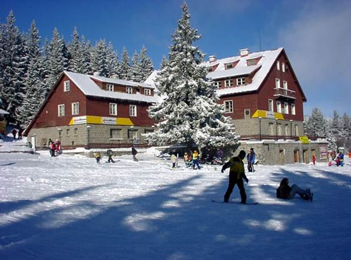
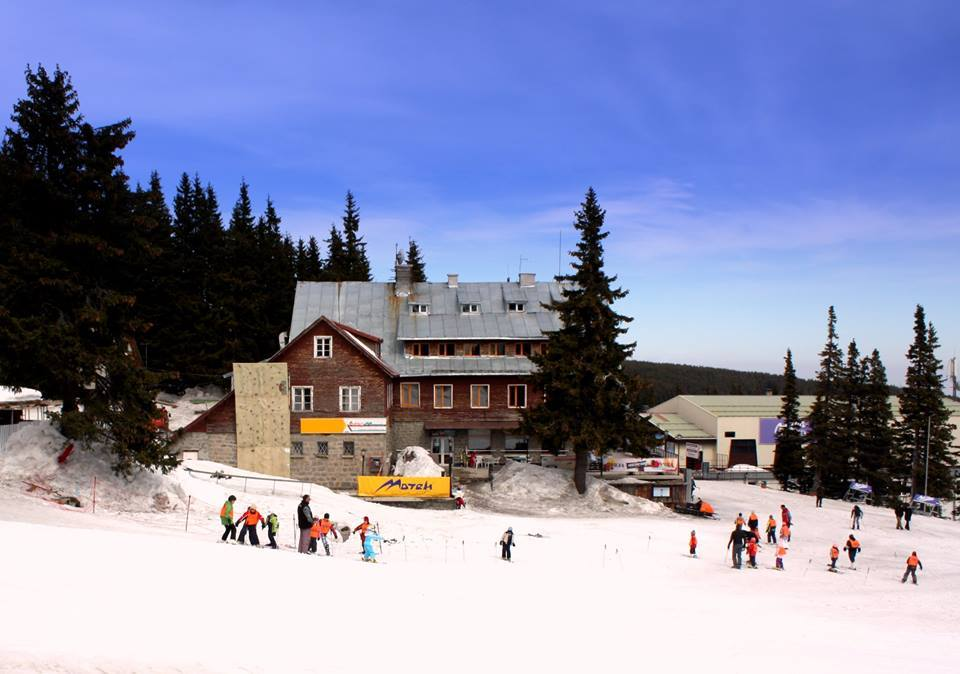
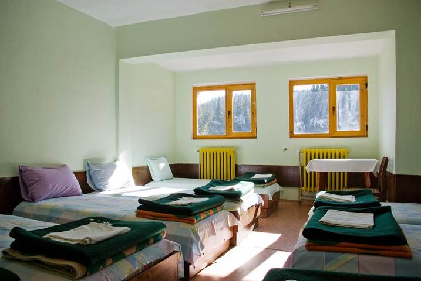

Хижа Алеко
| Датата 27.08.1895 г. е паметна за българския туризъм. Тогава витошкия първенец Черни връх (2290 м.) е изкачен от група от 300 души, което полага основите на организирания туризъм в страната. Инициатор и водач в това начинание е великият български творец и знаменит пътешественик Алеко Константинов – Щастливеца. |
 |
|  | Поради тази причина е взето решението първата хижа във Витоша – хижа Алеко, да бъде именувана на прочутия пътеписец. Именно тя е основната отправна точка към най-високата точка на планината. Построена е в периода 1922 г. – 1924 г. от туристическо дружество “Алеко Константинов”, което, освен най-стара във Витоша, я нарежда на второ място по възраст след “Скакавица” в Рила, която е завършена през 1922 г. Днес тя е един от 100-те национални туристически обекта. |
| Намира се в местността Масловица, на 1810 м надморска височина. Освен към Черни връх тя е отправна точка на много туристически маршрути. Изумителната красота, която я обгражда, я прави едно от предпочитаните места за отдих и разходка, както през топлите летни дни, така и през зимата. Условията за ски туризъм тук са изключително благоприятни. В близост са изградени 1 кабинков и 2 седалкови лифта и няколко ски влека, които водят до няколко, различни по трудност ски писти. Непосредствено до сградата се намира базата на Планинска спасителна служба. Самата хижа разполага със ски училище, където може да получите качествена тренировка, както и да наемете ски екипировка от наличните над 500 ски комплекта и над 100 сноуборда. |
 |
|  | От годините на нейното строителство до наши дни хижата е неколкократно реновирана и разширявана, за да я виждаме като голяма триетажна постройка днес. Разполага с леглова база за 110 души и ресторант със 150 седящи места. Тя е електрифицирана, водоснабдена и с централно отопление. Стаите са с различна вместимост – от 2 до 10 легла, а санитарните възли са по един с няколко помещения на всеки етаж. До нея може да се стигне по асфалтов път за по малко от 20 мин от кв. Драгалевци в София, пеш – за около 2 часа или за половин час чрез лифта Симеоново-Алеко.
Хижа Алеко е един от 100-те национални туристически обекта.
|
Незабравима Ваканция!